Grafana Guide: Explore Metrics
|
This content was generated with the assistance of AI and should be verified against the official documentation before being relied on in production. |
Checked on 2026-11-11 against Grafana 13.3.x.
What you build
You explore the request metrics of the Bookshelf service without building a dashboard. You build a query with the Prometheus query builder until it draws the request rate per HTTP status, read the same query as PromQL, write a second query that computes the 95th percentile of the request duration, compare queries in a split view, run an old query again from the history, look at a query with the inspector, and end in the Metrics Drilldown app, which lists every metric as a small chart.
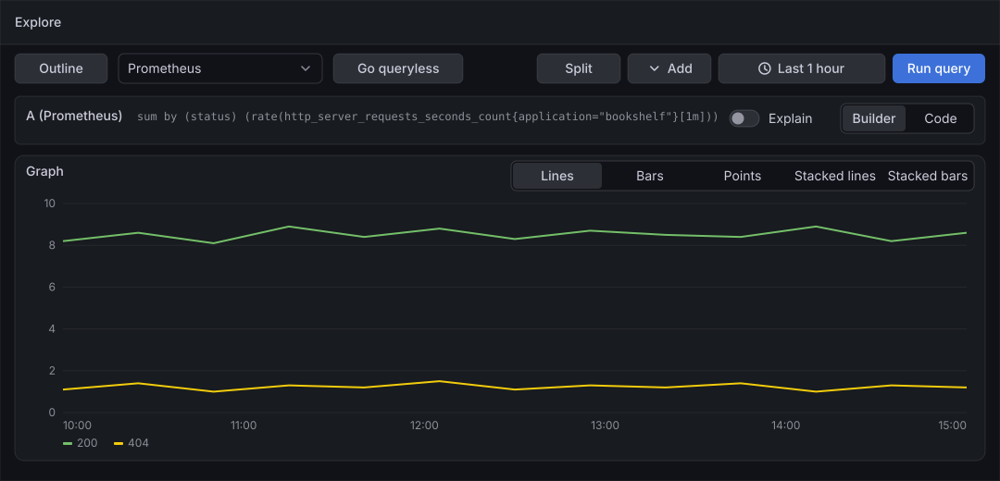
Before you start
-
Start the Grafana profile of the hands-on lab and wait about a minute:
cd lab docker compose --profile grafana up -d -
Open http://localhost:3000, sign in as
adminwith the passwordadmin, and click Skip when Grafana 13.3 asks you to update the default password. -
Do the previous guide, Add a data source, or at least use the provisioned data source Prometheus, which is the default and which this guide queries. Your own guide-prometheus works the same way.
-
The load generator sends traffic to the Bookshelf service in its default mode, which gives the queries something to draw. Check the mode with
curl localhost:8090/. -
The guide was checked on Grafana Enterprise 13.3.0 (the free image, no licence key). Explore needs the Viewer role or higher;
adminhas it. -
The figures are drawings of the Grafana 13.3 user interface, not screenshots, so small details can differ from your screen. A highlighted box with a number marks the control of the step with the same number.
Steps
The screen map shows the areas of Explore that the steps use. Come back to it when a control is not where the figures show it. The figures draw the toolbar and one query; the page also has a left outline with Queries and Graph that the figures leave out.
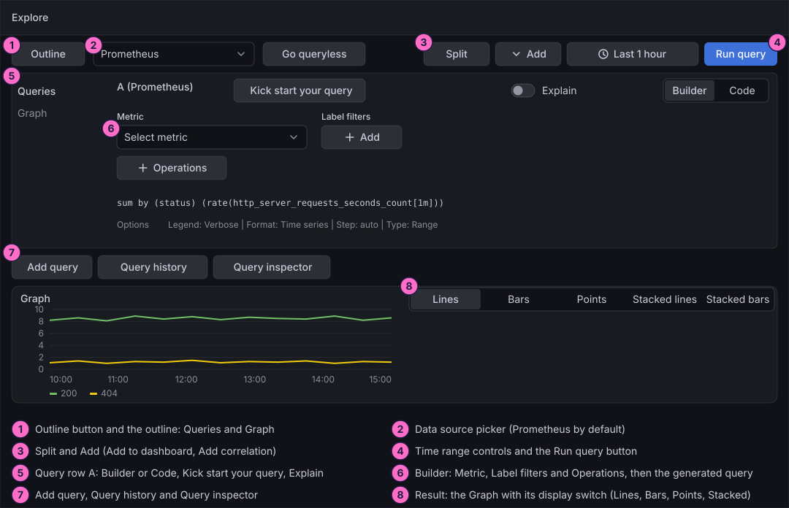
Open Explore
-
In the left navigation, click Explore.
-
Check that the data source picker at the top shows Prometheus. If it shows another data source, open the picker and choose Prometheus.
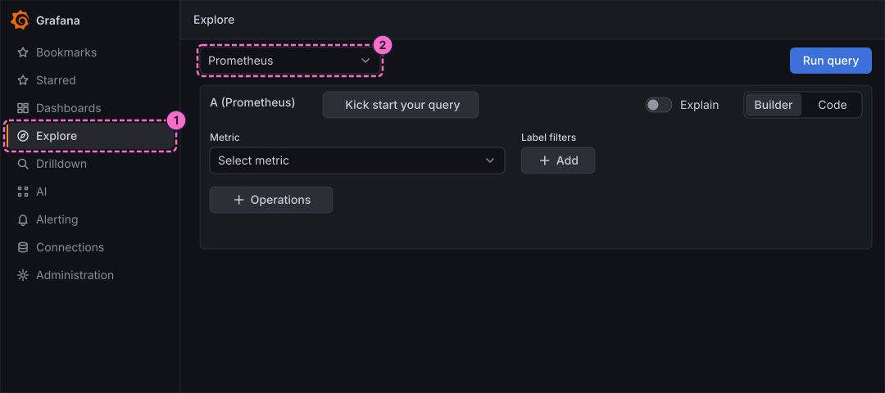
Build the query with the builder
-
In query A, make sure Builder is selected. Click the Metric select, which shows Select metric, and type
http_server_requests_seconds. -
Choose
http_server_requests_seconds_countfrom the list. It counts the requests the Bookshelf service has answered.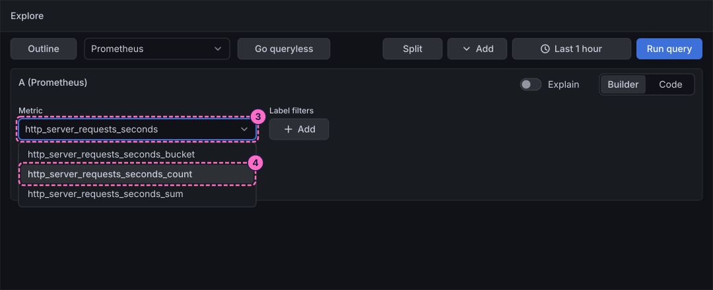
-
Under Label filters, click Add.
-
In the label select, choose
application. The operator stays at=. -
In the value select, choose
bookshelf. Without this filter the query also counts the requests of other applications.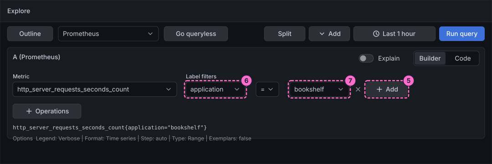
-
Click Operations, open the category Range functions and choose Rate. A card Rate appears next to the button.
-
Click Operations again, open the category Aggregations and choose Sum by. A card Sum by appears after the first one.
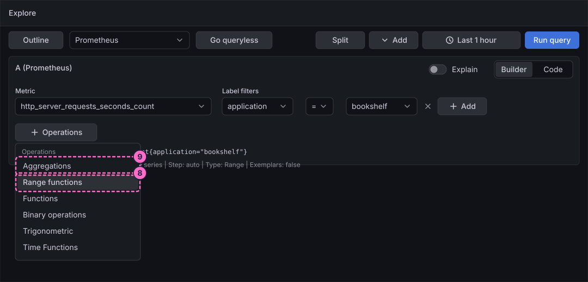
-
In the card Rate, check that Range is
1m; if not, type1m. The rate is then computed over the last minute. -
In the card Sum by, choose
statusin Label. The sum then keeps one series per HTTP status. -
Click the blue Run query button of the toolbar. The line under the cards shows the PromQL that the builder generated:
sum by (status) (rate(http_server_requests_seconds_count{application="bookshelf"}[1m]))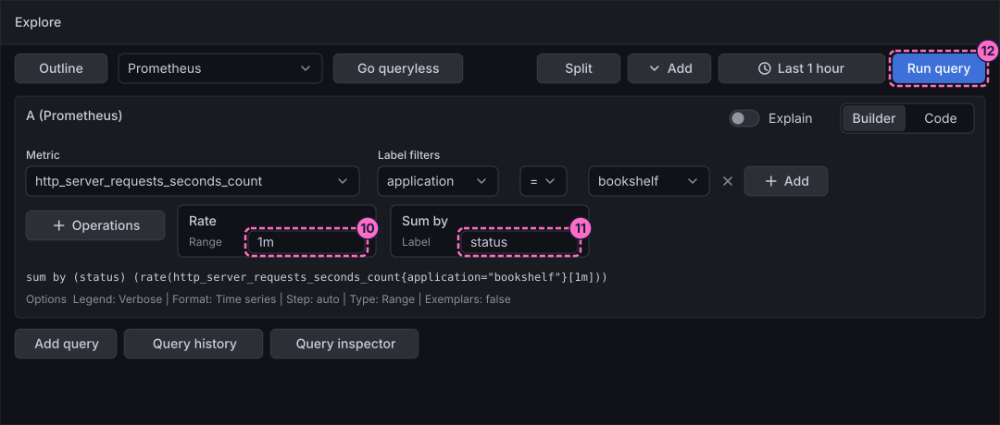
-
Look at the Graph: a green line for the status
200and a yellow line for404. In the display switch above the chart, click Bars to see the same data as bars, then click Lines again.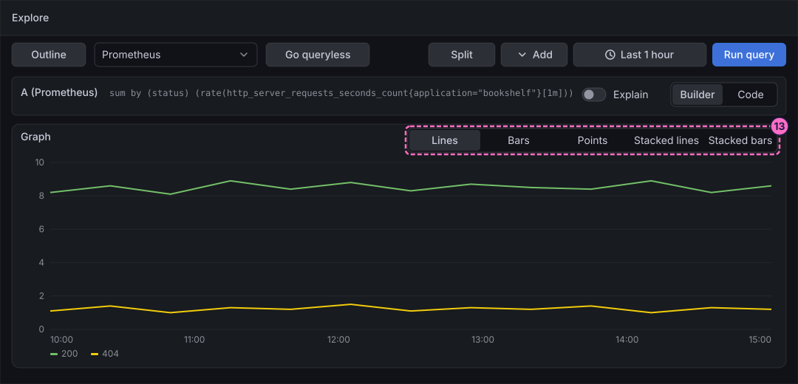
Read the query as code and explain it
-
In the Builder / Code switch of query A, click Code. The editor shows the PromQL of the builder.
-
Turn on the Explain switch of the query. Grafana describes the query step by step; read it, and turn the switch off again if you like.
-
Click Add query at the bottom of the queries. A second query, B, appears.
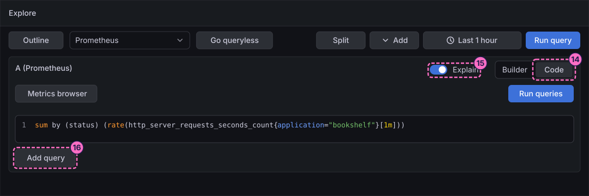
-
In the empty query B, click Kick start your query. The button is offered only while a query is empty.
-
Choose one of the starting queries it lists to see how it fills the query. The list is not part of the guide: its entries depend on the data source.
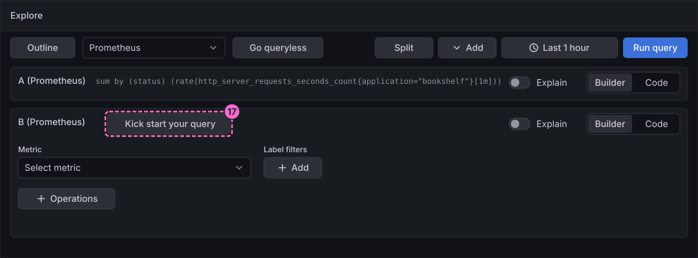
Write a percentile with histogram_quantile
-
In query B, click Code in the Builder / Code switch.
-
Click inside the editor so that it has the focus, select all with Ctrl+A (Cmd+A on macOS) to replace what the starting query put there, and type the query:
histogram_quantile(0.95, sum by (le) (rate(http_server_requests_seconds_bucket{application="bookshelf"}[1m]))) -
Click Run queries. The graph now draws the 95th percentile of the request duration, in seconds, as a series next to the request rates.
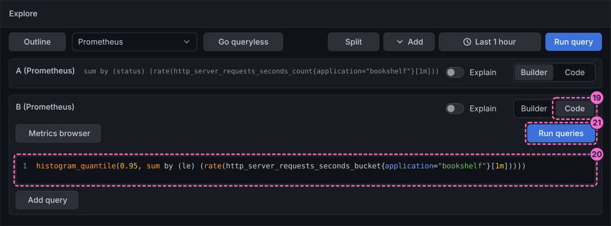
Compare queries in a split view
-
Click Split in the toolbar.
-
A second Explore pane opens next to the first. Use it to try a variation, for example another time range or another query, while the first pane keeps its result.
-
Close the second pane with the close control at its top right.
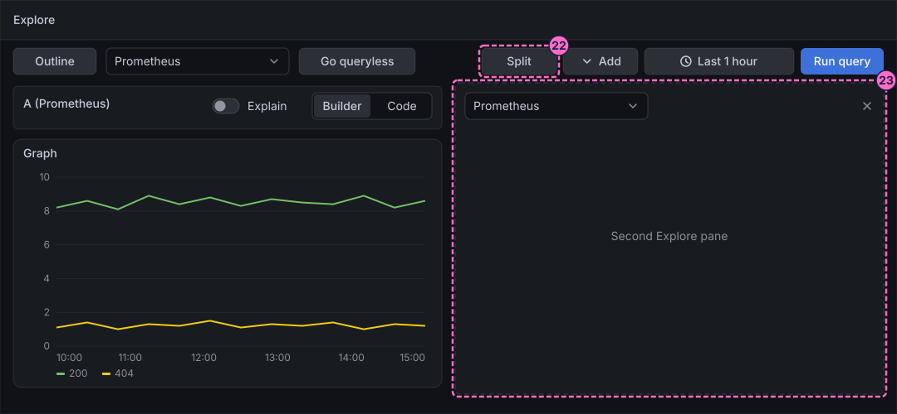
Reuse and inspect queries
-
Under the queries, click Query history. A drawer opens at the bottom with the tabs Query history, Starred and Settings, and one entry for each query you ran, newest first.
-
Click the star of an entry to keep it under the tab Starred.
-
Click Run query on an entry to run it again.
-
Click Query inspector to see the request and the response of the query.
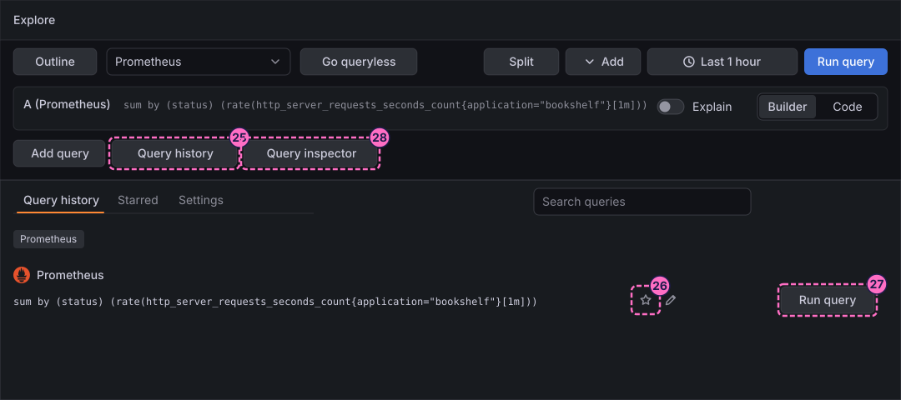
Send the query to a dashboard
-
Click Add in the toolbar.
-
Click Add to dashboard. The other entry of the menu, Add correlation, links data sources and is not used here.
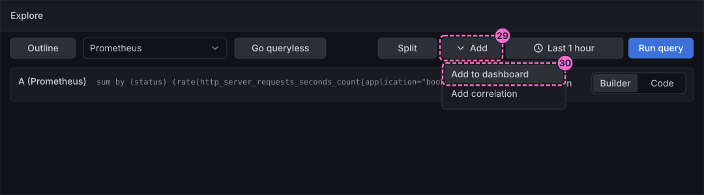
-
In the dialog that opens, choose where the panel goes and confirm it, or close the dialog if you only wanted to see it. Choose a new dashboard rather than Bookshelf (guides) when you want to leave the dashboard of the dashboard guides as it is. The dialog was not checked in the lab, so follow its own labels.
Browse the metrics with Drilldown
-
In the left navigation, open Drilldown and click Metrics. The page is titled All metrics and shows one small chart for every metric.
-
In the box Quick search metrics, type
http_server. The list narrows to the request metrics of the Bookshelf service. -
Click Select on the card of
http_server_requests_seconds_count. The app opens a view of that metric; it was not checked in detail, so explore it with its own controls.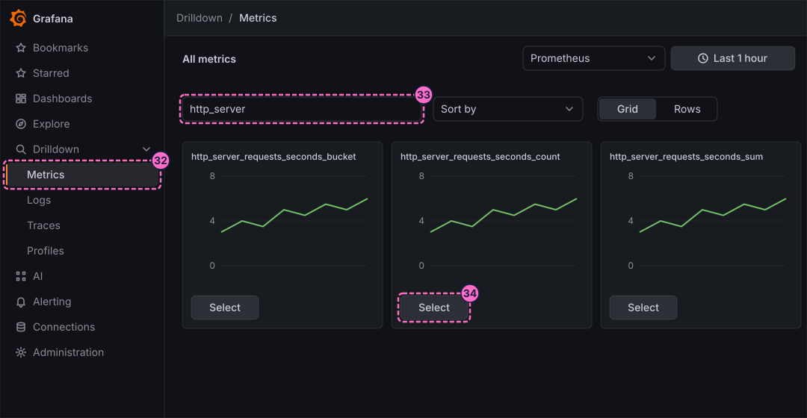
Check the result
Go back to Explore. Query A must draw a green line for 200 and a yellow line for 404, and query B must draw the percentile series. In Query history, both queries must appear.
To see the query react, force errors, run query A again with Run query and wait about a minute:
curl -X POST localhost:8090/mode/failingA third line appears for the status 500. To see the percentile grow, send the slow mode instead:
curl -X POST localhost:8090/mode/slowRestore normal traffic afterwards:
curl -X POST localhost:8090/mode/normalVariations
-
In the Options line below the builder, change Type from Range to Instant to get the latest value per series, and read it in the table that an instant query adds under the graph.
-
Switch the data source picker to guide-prometheus from the previous guide and run the same queries; the result is the same, because both point at the same Prometheus.
-
Replace the label
statusin Sum by withurito see the request rate per route instead of per status.
What can go wrong
| Symptom | Cause | Fix |
|---|---|---|
The graph says No data |
The time range ends before the data starts, the lab started less than a minute ago, or the load generator is stopped. |
Wait a minute and click Run query. Check the mode with |
The editor shows a red error under the query |
The text was typed before the editor had the focus, or the old query was not selected before typing, so the query is mangled. |
Click in the editor, select all with Ctrl+A (Cmd+A on macOS), and type the query again. |
The Metric select lists no |
The metric lookup found no Bookshelf data, because the service is not running or Prometheus has not scraped it yet. |
Run |
Kick start your query is missing |
The button is shown only while a query is empty. |
Click Add query and use the button on the new query. |
The percentile query draws nothing |
The histogram buckets have no samples in the last minute, because no traffic is flowing. |
Send |
Clean up
The guide creates no saved resources. The query history stays in your browser and the second pane of the split view is closed in step 24. If you added a panel to a dashboard in step 31, remove it from that dashboard or delete the dashboard.
Where to go next
-
Previous guide: Add a data source.
-
Next guide: Explore logs and traces, which does the same for Loki and Tempo.
-
Reference: Queries, Explore and Drilldown explains query options, Explore and the Drilldown apps in full.